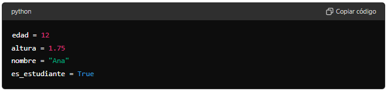

CONCEPTOS TEÓRICOS
TIPOS DE DATOS : NÚMEROS Y CADENAS
VARIABLES
- Una variable es un espacio en la memoria que se utiliza para almacenar un valor que puede cambiar durante la ejecución del programa.
Cómo nombrar variables
- Las variables deben tener nombres descriptivos.
- Deben comenzar con una letra o un guion bajo
_. - Pueden contener letras, números y guion bajo
_. - No pueden usar palabras reservadas de Python como
print,if,else, etc.

Este código define cuatro variables y les asigna diferentes tipos de valores.
-
Variable
edad:edad = 12- Se crea una variable llamada
edady se le asigna el valor entero12. - El tipo de dato de esta variable es un entero (
int), que representa un número sin decimales.
- Se crea una variable llamada
-
Variable
altura:altura = 1.75- Se crea una variable llamada
alturay se le asigna el valor decimal1.75. - El tipo de dato de esta variable es un número de punto flotante (
float), que representa un número con decimales.
- Se crea una variable llamada
-
Variable
nombre:nombre = "Ana"- Se crea una variable llamada
nombrey se le asigna la cadena de texto"Ana". - El tipo de dato de esta variable es una cadena de caracteres (
str), que representa texto.
- Se crea una variable llamada
-
Variable
es_estudiantees_estudiante = True- Se crea una variable llamada
es_estudiantey se le asigna el valor booleanoTrue. - El tipo de dato de esta variable es un booleano (
bool), que representa un valor de verdad (Truepara verdadero yFalsepara falso).
- Se crea una variable llamada
Resumen:
edad: Es una variable entera que almacena la edad, en este caso12.altura: Es una variable de punto flotante que almacena la altura en metros, en este caso1.75.nombre: Es una variable de cadena que almacena el nombre, en este caso"Ana".es_estudiante: Es una variable booleana que indica si es estudiante, en este casoTrue(verdadero).
Estas variables pueden ser usadas más adelante en el programa para realizar operaciones, mostrar información, o tomar decisiones basadas en sus valores.